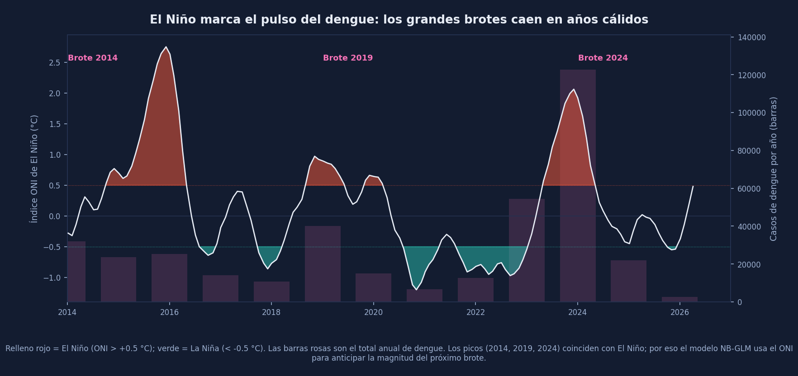
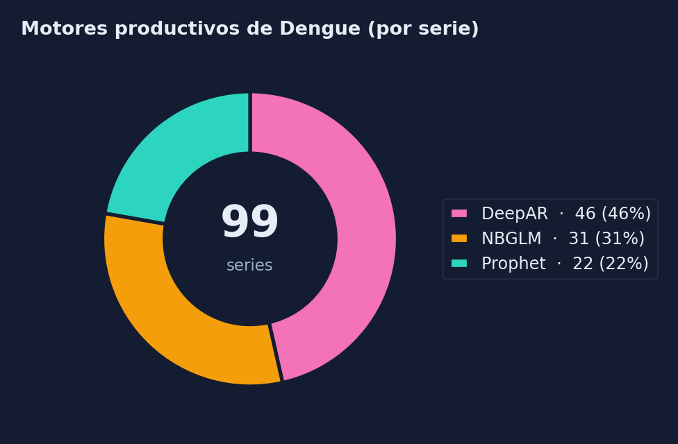
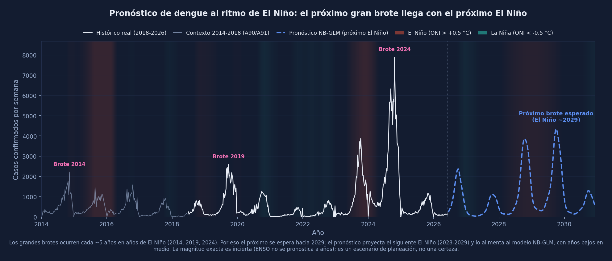

Dengue — 4.º padecimiento
Primera enfermedad transmitida por vector del proyecto. Serie semanal del dengue confirmado 2018–2026 de las 32 entidades, reconstruida desde los boletines del SINAVE y modelada en conteos absolutos (no en tasa, como neuro).
392 sem
Serie nacional 2018–2026 (≈8 años)
99 series
Nacional + 32 entidades × 3 sexos
5 motores
Prophet, DeepAR, Ensemble, Stacking, NB-GLM
DeepAR
Motor nacional productivo
1 año + 5
Pronóstico 52 sem + proyección 5 años ilustrativa


Izquierda: ciclo epidémico (grandes brotes ≈ cada 4–5 años: 2019, 2024). Derecha: el ciclo inter-anual sigue a El Niño (ONI), señal ausente en los conteos recientes.
Hallazgos clave
El Niño como regresor
El dengue sigue el ciclo ENSO, pero esa señal no vive en los conteos recientes. Al agregar el índice ONI rezagado 16 sem a Prophet, el backtest leave-one-epidemic-out mejora el nacional de SMAPE 102 a 76, y el pico 2024 de ratio 1.61 a 0.87.
NB-GLM, el mejor motor
GLM Negative-Binomial + Fourier + El Niño: count-correcto y extrapola sin divergir. Es el mejor del estudio (SMAPE 52 vs Prophet+ENSO 76 vs Prophet 102). Ensemble y Stacking quedan fuera: los árboles no extrapolan la dinámica epidémica a 52 sem.
Regiones con DeepAR nativo
Un backtest OOS sobre la epidemia 2024 mostró que agregar los estados compone los sobre-tiros y explota (ratio de pico 34–157x). Las 4 regiones usan DeepAR nativo, el más contenido y fiel en magnitud (MAE 460 vs 3.7k–10k de la agregación).
Nota honesta de validación
La métrica de selección de motor (SMAPE 2026) es in-sample (el modelo final ve 2026 H1). El backtest de NB-GLM sí es limpio (leave-one-epidemic-out). Se valida prospectivo OOS en las semanas no vistas antes de re-entrenar. Ver Auditoría.


Izquierda: motor productivo por serie (DeepAR 15, Prophet 9, NB-GLM 9 a nivel general). Derecha: proyección multi-año NB-GLM guiada por el próximo El Niño (~2029); precisa a 52 sem, ilustrativa más allá.

Carga acumulada de dengue por entidad (2018–2026): el Sur-Sureste y la costa del Pacífico concentran la transmisión.